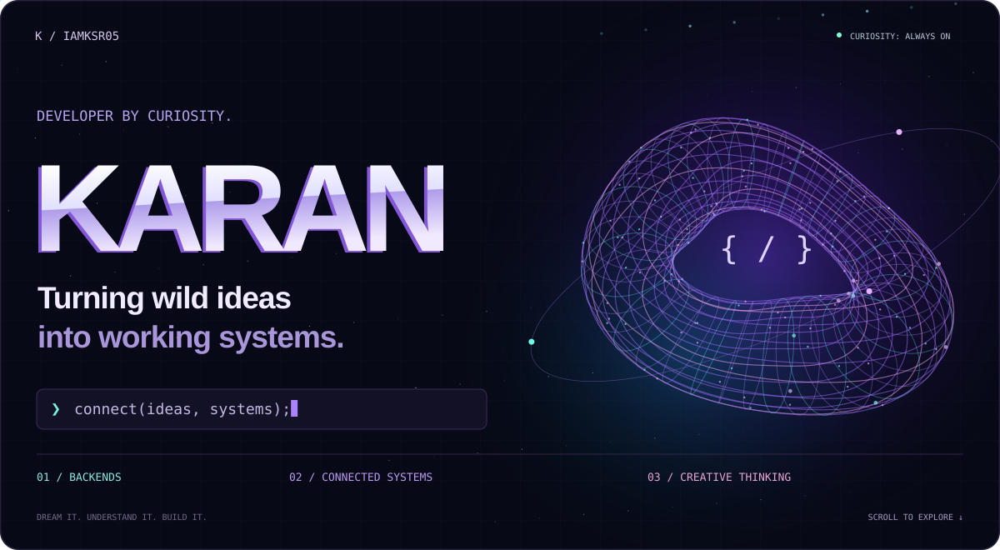
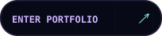
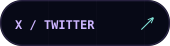

   
01 / The person behind the code
I'm Karan. I like knowing what happens after you click the button — the API call, the backend logic, the database query, and the pieces that make a product work.
I build across those connections, learn through real projects, and bring a creative eye to the experience. My next frontier is AI & machine learning. My approach stays the same: understand it, experiment with it, and make something useful.
Curious enough to take it apart. Persistent enough to put it back together.
02 / Selected work
Two repositories from my building journey. Dive into the code, explore the decisions, and see the work for yourself.
03 / My working toolkit
Tools I use, ideas I'm exploring, and the creative side that comes with me.
| Area | Technologies & tools |
|---|---|
| Code | Python · JavaScript · C · HTML · CSS |
| Backend | Node.js · API flows · System integration |
| Data | MySQL · MongoDB |
| Workflow | Git · GitHub · VS Code · Postman |
| Exploring | Express.js · React · Tailwind CSS · AI/ML fundamentals |
| Creative | After Effects · Premiere Pro · Figma |
04 / How I think
Understand the system. Follow the data, question the assumptions, and figure out how the pieces connect.
Make it useful. Build for real people, with clear interactions and a reason behind each decision.
Keep the creative edge. Code, motion, and design are different ways to turn an idea into an experience.
Stay a learner. Experiment. Test. Break things. Fix them. Carry the lesson into the next build.
05 / The work continues
Backend depth. Better interfaces. AI/ML foundations. There's always another layer to understand.
A little motion from my contribution history 🐍

Generated from my GitHub contributions by the workflow in this repository.
Dream. Learn. Innovate. / @iamksr05